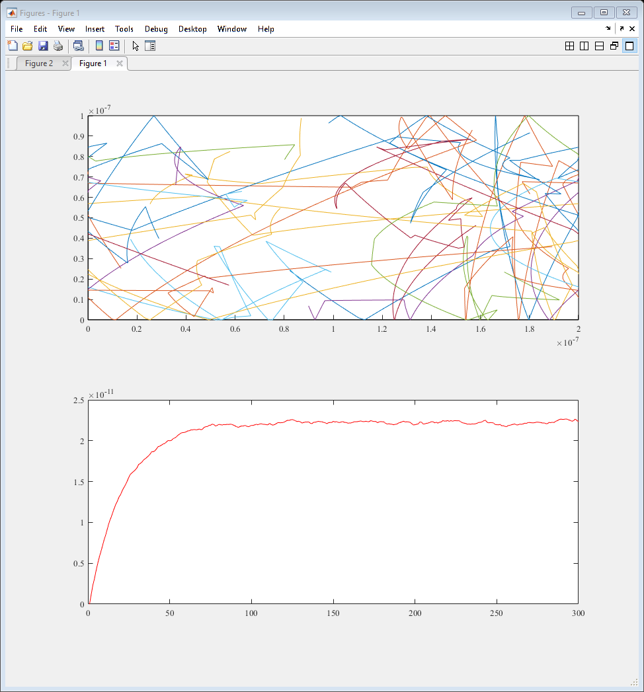
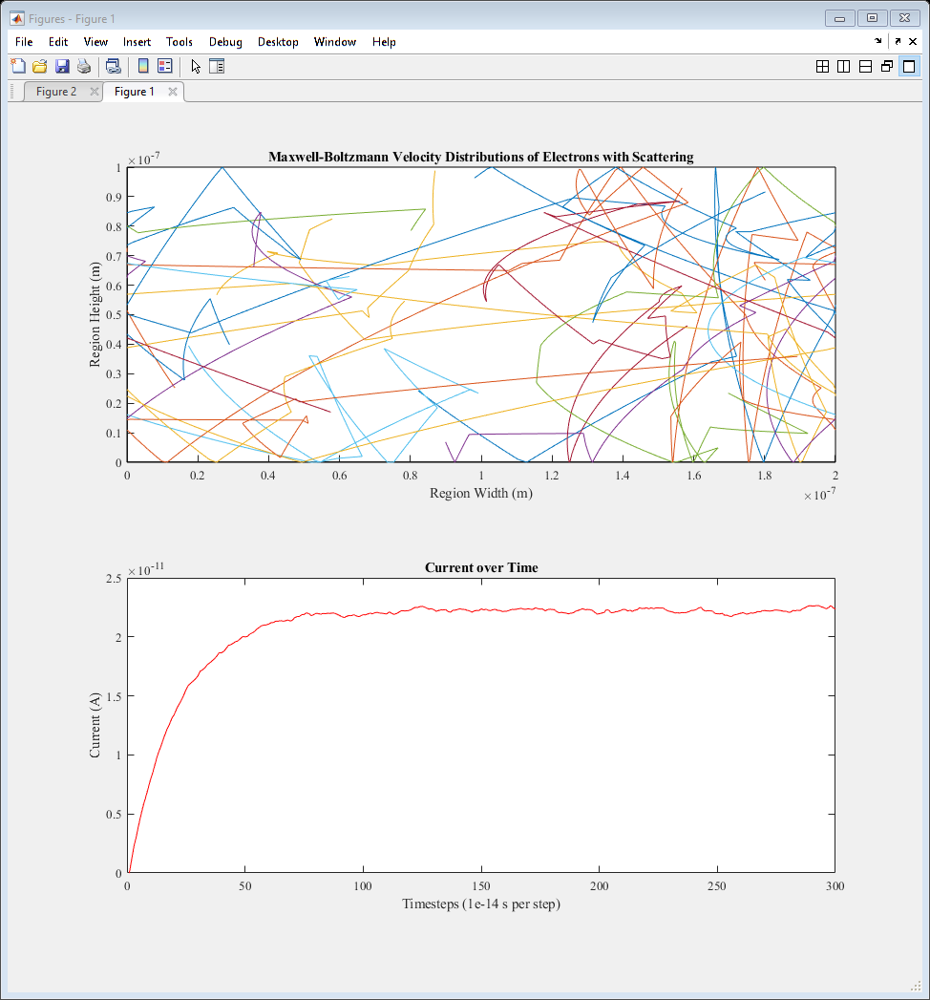
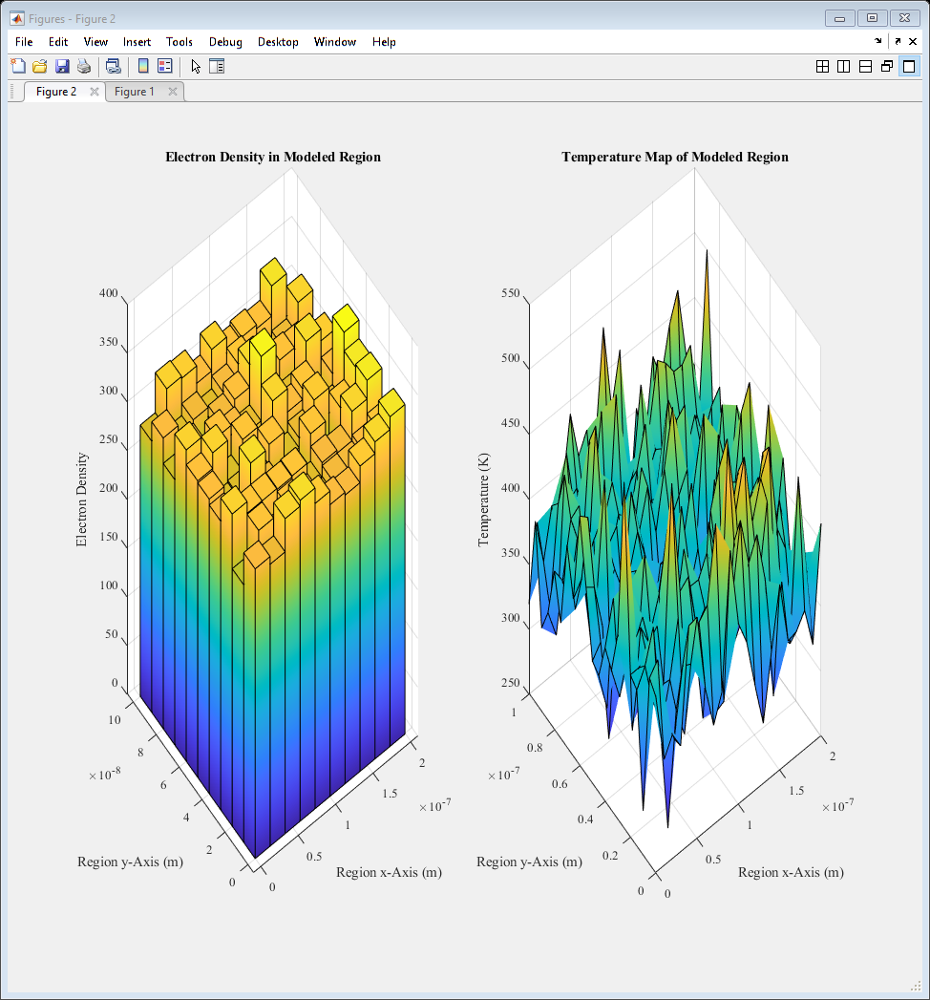
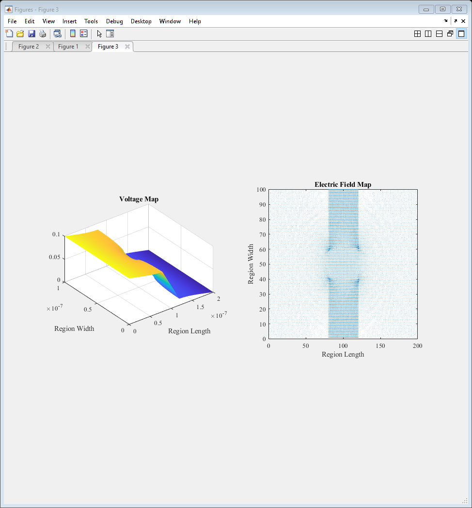
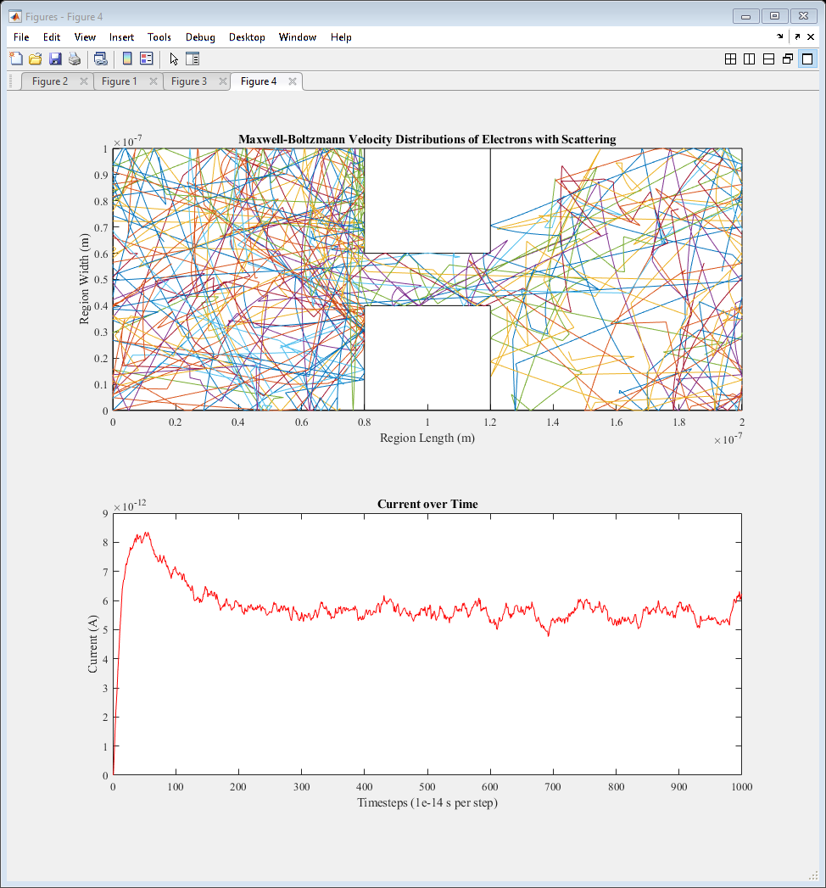
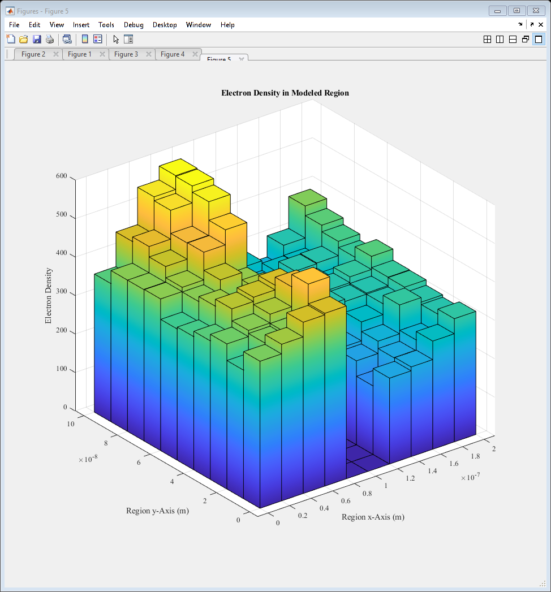
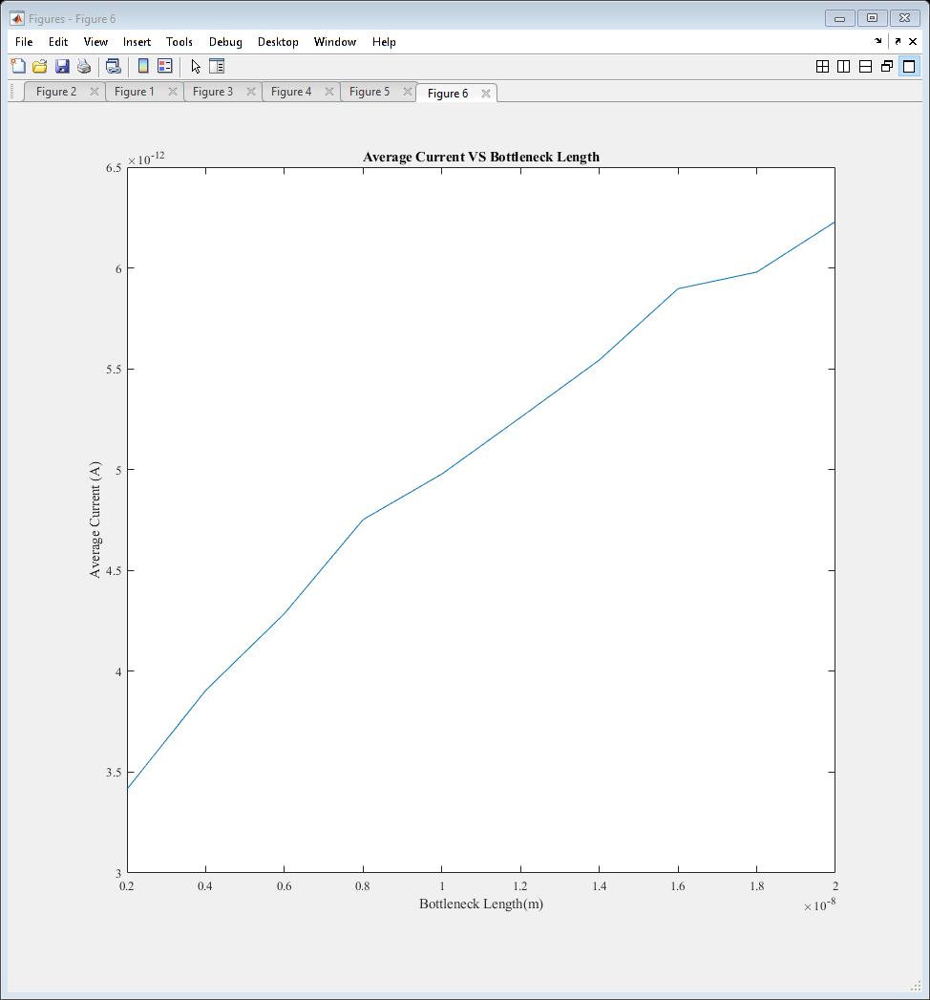

ELEC 4700 Assignment 3
Contents
Monte-Carlo/Finite Difference Method Coupled Simulation
Keegan Mauger 101042551
Section 1: Revisiting Assignment 1
In assignment 1, a Monte-Carlo simulator to emulate the movement of electrons was developed. For section one, the simulator without the bottlenecks will be updated.
Section 1.1: Various Calculations
Note that these values were found with the simulation ran at the time of writing this report, but due to the inherent randomness of the Monte-Carlo simulation, the generated values will likely be different. With an applied voltage of 0.1V over the x dimension, the electric field on the electrons was found to be $5e5$V/m. Using this, the force on each electron was calculated to be approximately 8.0109N. With the force, the acceleration on each electron was calculated to be approximately $3.38e17$m/s^2. Next, the current in the x dimension was calculated using the formula Ix = (e*n*v_dx)(W*L), the meaning of which is described below.
It was seen that the current density and the average carrier velocity are proportional, where an increase in one leads to an increase in the other.
% Initialization clear all close all clc figure(2) %set(0,'DefaultFigureWindowStyle','docked') set(0,'defaultaxesfontsize',10) set(0,'defaultaxesfontname','Times New Roman') set(0,'DefaultLineLineWidth', 0.5); global C C.q_0 = 1.60217653e-19; % electron charge C.hb = 1.054571596e-34; % Dirac constant C.h = C.hb * 2 * pi; % Planck constant C.m_0 = 9.10938215e-31; % electron mass C.kb = 1.3806504e-23; % Boltzmann constant C.eps_0 = 8.854187817e-12; % vacuum permittivity C.mu_0 = 1.2566370614e-6; % vacuum permeability C.c = 299792458; % speed of light C.g = 9.80665; % metres (32.1740 ft) per s² C.m_n = 0.26 * C.m_0; % effective electron mass C.am = 1.66053892e-27; % atomic mass unit C.T = 300; C.vth = sqrt(2*C.kb * C.T / C.m_n); figure(1) temp = C.T; subplot(2,1,1); rectangle('Position',[0 0 200e-9 100e-9]) hold on %-------------------------------------------------------------------------- % Initializing Positions %-------------------------------------------------------------------------- N = 30000; % Number of electrons i = 0; j = 0; for i=1:N px(i) = 0 + (200e-9 - 0).*rand(1,1); py(i) = 0 + (100e-9 - 0).*rand(1,1); end %-------------------------------------------------------------------------- % Voltage Applied Across x-Dimension to Find Electric Field %-------------------------------------------------------------------------- V0x = 0.1; V0y = 0; L = 200e-9; W = 100e-9; E0x = V0x / L; E0y = V0y / W; fMesh = 1; nx = fMesh*200; ny = fMesh*100; % G = sparse(nx,ny); % F = sparse(1,nx*ny); La = linspace(0,L,nx); Wa = linspace(0,W,ny); Emapx = zeros(ny,nx); Emapy = zeros(ny,nx); for i = 1:width(La) for j = 1:width(Wa) Emapx(j,i) = E0x; Emapy(j,i) = E0y; end end %surf(La,Wa,Emapx) Fex = abs(C.q_0*E0x); aex = Fex/C.m_n; Fey = abs(C.q_0*E0y); aey = Fey/C.m_n; %-------------------------------------------------------------------------- % Thermal Velocity and Direction %-------------------------------------------------------------------------- vth = C.vth; for j=1:N vx(j) = (vth/sqrt(2))*randn(); vy(j) = (vth/sqrt(2))*randn(); vth_calc(j) = sqrt(vx(j)^2 + vy(j)^2); end t = 0; T(1) = 0; dt = 1e-14; % time step for l=1:N %Scattering time step ndt(l) = dt; end P_scat = 0; Tmn = 0.2e-12; px_prev = 0; py_prev = 0; T_prev = 0; vx_total = 0; vy_total = 0; sampleidx = randi(N,10,1); Ix = 0; Jx = 0; for t=2:300 vx_total = 0; vy_total = 0; for k=1:N if px(k) == 200e-9 px(k) = 0; px_prev(k) = px(k); elseif px(k) == 0 px(k) = 200e-9; px_prev(k) = px(k); else px(k) = px(k); end P_scat(k) = 1 - exp(-(dt/Tmn)); if P_scat(k) > rand() vx(k) = (vth/sqrt(2))*randn(); vy(k) = (vth/sqrt(2))*randn(); else ndt(k) = ndt(k) + dt; end px_prev(k) = px(k); px(k) = px(k) + vx(k)*dt + aex*dt^2; % Adding acceleration vx(k) = vx(k) + aex*dt; py_prev(k) = py(k); py(k) = py(k) + vy(k)*dt + aey*dt^2; vy(k) = vy(k) + aey*dt; if py(k) >= 100e-9 || py(k) <= 0 vy(k) = -vy(k); if py(k) >= 100e-9 py(k) = 100e-9; end if py(k) <= 0 py(k) = 0; end end if px(k) > 200e-9 px(k) = 200e-9; % px_prev(k) = px(k); elseif px(k) < 0 px(k) = 0; % px_prev(k) = px(k); else px(k) = px(k); end v(k) = sqrt(vx(k)^2 + vy(k)^2); v2(k) = v(k).*v(k); vx_total = vx_total + vx(k); % Drift velocity x vy_total = vy_total + vy(k); % Drift velocity y end vx_total_alt = sum(vx); for h=1:length(sampleidx) subplot(2,1,1); plot([px_prev(sampleidx(h)) px(sampleidx(h))],[py_prev(sampleidx(h)) py(sampleidx(h))],'SeriesIndex',h) hold on end vx_drift = 1/N * vx_total; vy_drift = 1/N * vy_total; Jx = C.q_0 * 1e17 * vx_drift; Ix_prev = Ix; Ix = Jx * (W*L); subplot(2,1,2); plot([t-1 t], [Ix_prev Ix], 'r') hold on KE = 0.5 * C.m_n * mean(v2); T_prev = T; T = KE / C.kb; % subplot(2,1,2); % plot([t-1 t], [T_prev T],'r') % hold on pause(0.01) end T_T_C = mean(ndt); MFP = mean(v)*mean(ndt); disp('Section 1') fprintf(... '\nFor an applied voltage of %f V across the x dimension, the electric field on the electrons is %e V/m.'... ,V0x,E0x) fprintf('\n\nWith the electric field of %e V/m, the force on each electron is %e N.',E0x,Fex) fprintf('\n\nWith the force known, the acceleration of each electron is %e m/s^2.',aex) fprintf('\n\nThe formula to find current in the x dimension is: Ix = (e*n*v_dx)(W*L)') fprintf('\nWhere:') fprintf('\ne is the electron charge') fprintf('\nn is the concentration of electrons') fprintf('\nv_dx is the drift velocity of the electrons in the x direction') fprintf('\nW and L are the region width and length')
Section 1 For an applied voltage of 0.100000 V across the x dimension, the electric field on the electrons is 5.000000e+05 V/m. With the electric field of 5.000000e+05 V/m, the force on each electron is 8.010883e-14 N. With the force known, the acceleration of each electron is 3.382347e+17 m/s^2. The formula to find current in the x dimension is: Ix = (e*n*v_dx)(W*L) Where: e is the electron charge n is the concentration of electrons v_dx is the drift velocity of the electrons in the x direction W and L are the region width and length
Section 1.2
The Monte-Carlo simulation was modified to model the effects of acceleration, previously calculated, on the electrons. The result was that the electrons were able to respond to the effects of a static electric field present in both the x and y axis, represented by the acceleration on the particles. The trajectories of the electrons were then plotted, where the curve as a result of acceleration can be seen. Additionally, the current over time was modelled and displayed. It can be seen that the current remains at approximately the same value, due to a relatively constant electron drift velocity over time.
subplot(2,1,1); title('Maxwell-Boltzmann Velocity Distributions of Electrons with Scattering') xlabel('Region Width (m)') ylabel('Region Height (m)') subplot(2,1,2); title('Current over Time') xlabel('Timesteps (1e-14 s per step)') ylabel('Current (A)') % disp('Section 2') % fprintf('\nThe given mean free time between collisions is %e seconds.',Tmn) % fprintf('\nThe mean calculated time between collisions is %e seconds.',T_T_C) % fprintf('\nThe mean calculated thermal velocity is %e meters per second.',mean(vth_calc)) % fprintf('\nThe thermal velocity is %e meters per second.',vth) % fprintf('\nThe mean free path is %e meters.\n\n\n',MFP) pause(0.1) saveas(gcf,'Figure1')
Section 1.3
Finally, the temperature and density plots for the simulated region were generated.
E_map = [reshape(px,[N,1]),reshape(py,[N,1])]; figure(2) subplot(1,2,1); hist3(E_map,'CDataMode','auto','FaceColor','interp') %view(2) title('Electron Density in Modeled Region') xlabel('Region x-Axis (m)') ylabel('Region y-Axis (m)') zlabel('Electron Density') Nbins = 21; d = 1; u = 1; vtm = 0; vbm = 0; vbm2 = 0; T_map = zeros(Nbins); [X,Xe] = discretize(px,Nbins); [Y,Ye] = discretize(py,Nbins); for e=1:Nbins for f=1:Nbins for g=1:N if X(g) == e && Y(g) == f vtm(d) = v(g); vtm2(d) = vtm(d).*vtm(d); d = d+1; end end vbm2 = mean(vtm2); d = 1; T_map(e,f) = (0.5*C.m_n*vbm2)/C.kb; end end [V,W] = meshgrid(0:1e-8:2e-7,0:0.5e-8:1e-7); subplot(1,2,2); surf(V,W,T_map,'FaceColor','interp') %view(2) title('Temperature Map of Modeled Region') xlabel('Region x-Axis (m)') ylabel('Region y-Axis (m)') zlabel('Temperature (K)') saveas(gcf,'Figure2')
Section 2: Finite Difference Method
Using assignment 2, the finite difference method was used to calculate the electric field for the Monte-Carlo bottleneck simulation.
Section 2.1
First, the code from assignment 2 was reused to calculate the potential of the region with included bottleneck, shown below. Additionally, the electric field of the region was calculated in a quiver plot.
clear all %close all clc %set(0,'DefaultFigureWindowStyle','docked') set(0,'defaultaxesfontsize',10) set(0,'defaultaxesfontname','Times New Roman') set(0,'DefaultLineLineWidth', 0.5); %-------------------------------------------------------------------------- % Finite Difference Method Simulation %-------------------------------------------------------------------------- % Solving V=V0 @ x=0 and V=0 @ x=L in region LxW % Implement funtion 'pbaspect' to fix Z aspect ratio L = 200e-9; W = 100e-9; V0 = 0.1; fMesh = 1; nx = fMesh*200; ny = fMesh*100; La = linspace(0,L,nx); Wa = linspace(0,W,ny); G = sparse(nx*ny); %V = sparse(nx,ny); F = sparse(1,nx*ny); Acond = 1; % background conductivity of region, low resistance Bcond = 1e-2; % Conductivity of boxes, highly resistive cMap = zeros(nx,ny); Lb = 40e-9; Wb = 40e-9; for u = 1:nx for v = 1:ny if (u >= 80 && u <= 120) if v >= 0 && v <= 40 cMap(u,v) = Bcond; elseif v >= 60 && v <= 100 cMap(u,v) = Bcond; else cMap(u,v) = Acond; end else cMap(u,v) = Acond; end end end for i = 1:nx %Iteration through length for j = 1:ny %Iteration through width n = j + (i-1)*ny; if i == 1 % x=0 BCs G(n,:) = 0; G(n,n) = 1; F(n) = V0; elseif i == nx % x=1 BCs G(n,:) = 0; G(n,n) = 1; F(n) = 0; %F(n)=0 sets z at final width to 0 % COMMENT BELOW FOR 1a %F(n) = 1; %F(n)=1 sets z at final width to 1 elseif j == 1 % y=0 BCs nxm = j + (i-2)*ny; nxp = j + (i)*ny; nyp = j+1 + (i-1)*ny; rxm = (cMap(i,j) + cMap(i-1,j))/2; rxp = (cMap(i,j) + cMap(i+1,j))/2; ryp = (cMap(i,j) + cMap(i,j+1))/2; G(n,n) = -(rxm+rxp+ryp); G(n,nxm) = rxm; G(n,nxp) = rxp; G(n,nyp) = ryp; elseif j == ny % y=1 BCs nxm = j + (i-2)*ny; nxp = j + (i)*ny; nym = j-1 + (i-1)*ny; rxm = (cMap(i,j) + cMap(i-1,j))/2; rxp = (cMap(i,j) + cMap(i+1,j))/2; rym = (cMap(i,j) + cMap(i,j-1))/2; G(n,n) = -(rxm+rxp+rym); G(n,nxm) = rxm; G(n,nxp) = rxp; G(n,nym) = rym; % COMMENT ABOVE FOR 1a else nxm = j + (i-2)*ny; nxp = j + (i)*ny; nym = j-1 + (i-1)*ny; nyp = j+1 + (i-1)*ny; rxm = (cMap(i,j) + cMap(i-1,j))/2; rxp = (cMap(i,j) + cMap(i+1,j))/2; rym = (cMap(i,j) + cMap(i,j-1))/2; ryp = (cMap(i,j) + cMap(i,j+1))/2; G(n,n) = -(rxm+rxp+rym+ryp); G(n,nxm) = rxm; G(n,nxp) = rxp; G(n,nym) = rym; G(n,nyp) = ryp; end end end % figure(1) % spy(G) V = G\F'; Vmap = zeros(nx,ny); for i = 1:nx for j = 1:ny n = j + (i-1)*ny; Vmap(i,j) = V(n); end end for i = 1:nx for j = 1:ny if i == 1 Ex(i, j) = (Vmap(i + 1, j) - Vmap(i, j)); elseif i == nx Ex(i, j) = (Vmap(i, j) - Vmap(i - 1, j)); else Ex(i, j) = (Vmap(i + 1, j) - Vmap(i - 1, j)) * 0.5; end if j == 1 Ey(i, j) = (Vmap(i, j + 1) - Vmap(i, j)); elseif j == ny Ey(i, j) = (Vmap(i, j) - Vmap(i, j - 1)); else Ey(i, j) = (Vmap(i, j + 1) - Vmap(i, j - 1)) * 0.5; end end end Ex = -Ex; Ey = -Ey; eFlowx = cMap .* Ex; %Jx eFlowy = cMap .* Ey; %Jy C0 = sum(eFlowx(1, :)); Cnx = sum(eFlowx(nx, :)); Curr = (C0 + Cnx) * 0.5; Ex = Ex'; Ey = Ey'; figure(3) subplot(1, 2, 2), quiver(Ex, Ey); axis([0 nx 0 ny]); title('Electric Field Map') xlabel('Region Length') ylabel('Region Width') pbaspect([1 1 0.5]) subplot(1, 2, 1), H = surf(La,Wa,Vmap'); set(H, 'linestyle', 'none'); %view(90, 270) title('Voltage Map') xlabel('Region Length') ylabel('Region Width') pbaspect([1 1 0.5]) saveas(gcf,'Figure3') clearvars -except Ex Ey
Section 2.2
Using the calculated electric field as an input to the Monte-Carlo simulation, the trajectories of the electrons were then plotted. The number of timesteps used in previous simulations was altered from 300 to 1000, while the number of electrons (30000) remained unchanged.
%-------------------------------------------------------------------------- % Beginning Monte Carlo Simulation %-------------------------------------------------------------------------- set(0,'DefaultFigureWindowStyle','docked') set(0,'defaultaxesfontsize',10) set(0,'defaultaxesfontname','Times New Roman') set(0,'DefaultLineLineWidth', 0.5); global C C.q_0 = 1.60217653e-19; % electron charge C.hb = 1.054571596e-34; % Dirac constant C.h = C.hb * 2 * pi; % Planck constant C.m_0 = 9.10938215e-31; % electron mass C.kb = 1.3806504e-23; % Boltzmann constant C.eps_0 = 8.854187817e-12; % vacuum permittivity C.mu_0 = 1.2566370614e-6; % vacuum permeability C.c = 299792458; % speed of light C.g = 9.80665; % metres (32.1740 ft) per s² C.m_n = 0.26 * C.m_0; % effective electron mass C.am = 1.66053892e-27; % atomic mass unit C.T = 300; C.vth = sqrt(2*C.kb * C.T / C.m_n); temp = C.T; SPECDIFF_BOUND = 0; figure(4) subplot(2,1,1); rectangle('Position',[0 0 200e-9 100e-9]) hold on rectangle('Position',[0.8e-7 0 0.4e-7 0.4e-7]) hold on rectangle('Position',[0.8e-7 0.6e-7 0.4e-7 0.4e-7]) hold on %-------------------------------------------------------------------------- % Initializing Positions %-------------------------------------------------------------------------- N = 30000; % Number of electrons i = 0; j = 0; for i=1:N px(i) = 0 + (200e-9 - 0).*rand(1,1); py(i) = 0 + (100e-9 - 0).*rand(1,1); while (0.8e-7 <= px(i) && px(i) <= 1.2e-7) && (0 <= py(i) && py(i) <= 0.4e-7) ||... (0.8e-7 <= px(i) && px(i) <= 1.2e-7) && (0.6e-7 <= py(i) && py(i) <= 1e-7) px(i) = 0 + (200e-9 - 0).*rand(1,1); py(i) = 0 + (100e-9 - 0).*rand(1,1); end end %-------------------------------------------------------------------------- % Voltage Applied Across x-Dimension to Find Electric Field %-------------------------------------------------------------------------- V0x = 0.1; V0y = 0; L = 200e-9; W = 100e-9; % E0x = V0x / L; % E0y = V0y / W; fMesh = 1; nx = fMesh*200; ny = fMesh*100; % G = sparse(nx,ny); % F = sparse(1,nx*ny); La = linspace(0,L,nx); Wa = linspace(0,W,ny); deltax = L/nx; deltay = W/ny; Ex = Ex./deltax; Ey = Ey./deltay; % Emapx = zeros(ny,nx); Emapx = Ex; % Emapy = zeros(ny,nx); Emapy = Ey; % for i = 1:width(La) % for j = 1:width(Wa) % Emapx(j,i) = E0x; % Emapy(j,i) = E0y; % end % end % %surf(La,Wa,Emapx) % % Fex = abs(C.q_0*E0x); % aex = Fex/C.m_n; % Fey = abs(C.q_0*E0y); % aey = Fey/C.m_n; Fex = zeros(ny,nx); aex = zeros(ny,nx); Fey = zeros(ny,nx); aey = zeros(ny,nx); for i = 1:width(Wa) for j = 1:width(La) Fex(i,j) = abs(C.q_0*Emapx(i,j)); aex(i,j) = Fex(i,j)/C.m_n; Fey(i,j) = abs(C.q_0*Emapy(i,j)); aey(i,j) = Fey(i,j)/C.m_n; end end %-------------------------------------------------------------------------- % Thermal Velocity and Direction %-------------------------------------------------------------------------- vth = C.vth; for j=1:N vx(j) = (vth/sqrt(2))*randn(); vy(j) = (vth/sqrt(2))*randn(); vth_calc(j) = sqrt(vx(j)^2 + vy(j)^2); end t = 0; T(1) = 0; dt = 1e-14; % time step for l=1:N %Scattering time step ndt(l) = dt; end P_scat = 0; Tmn = 0.2e-12; px_prev = 0; py_prev = 0; T_prev = 0; vx_total = 0; vy_total = 0; sampleidx = randi(N,10,1); Ix = 0; Jx = 0; aex = aex'; aey = aey'; % aex(:,:) = 3e17; % Testing acceleration % aey(:,:) = 0; for t=2:1000 vx_total = 0; vy_total = 0; for k=1:N rpx = 0; rpy = 0; if px(k) == 200e-9 px(k) = 0; px_prev(k) = px(k); elseif px(k) == 0 px(k) = 200e-9; px_prev(k) = px(k); else px(k) = px(k); end P_scat(k) = 1 - exp(-(dt/Tmn)); if P_scat(k) > rand() vx(k) = (vth/sqrt(2))*randn(); vy(k) = (vth/sqrt(2))*randn(); else ndt(k) = ndt(k) + dt; end px_prev(k) = px(k); py_prev(k) = py(k); rpx = round(px(k)*1e9); if rpx == 0 rpx = 1; end rpy = round(py(k)*1e9); if rpy == 0 rpy = 1; end px(k) = px(k) + vx(k)*dt + aex(rpx,rpy)*dt^2; % Adding acceleration vx(k) = vx(k) + aex(rpx,rpy)*dt; py(k) = py(k) + vy(k)*dt + aey(rpx,rpy)*dt^2; vy(k) = vy(k) + aey(rpx,rpy)*dt; % Reflection on top and bottom borders if py(k) >= 100e-9 || py(k) <= 0 vy(k) = -vy(k); if py(k) >= 100e-9 py(k) = 100e-9; end if py(k) <= 0 py(k) = 0; end end % Reflection on bottom of upper box if (py(k) >= 0.6e-7) && (0.8e-7 <= px(k) && px(k) <= 1.2e-7)... && ( 0.8e-7 <= px_prev(k) && px_prev(k) <= 1.2e-7) if SPECDIFF_BOUND == 1 vx(k) = (vth/sqrt(2))*randn(); vy(k) = (vth/sqrt(2))*randn(); else vy(k) = -vy(k); end py(k) = 0.601e-7; %end % Reflection on top of lower box elseif (py(k) <= 0.4e-7) && (0.8e-7 <= px(k) && px(k) <= 1.2e-7)... && (0.8e-7 <= px_prev(k) && px_prev(k) <= 1.2e-7) if SPECDIFF_BOUND == 1 vx(k) = (vth/sqrt(2))*randn(); vy(k) = (vth/sqrt(2))*randn(); else vy(k) = -vy(k); end py(k) = 0.399e-7; %end % Reflection on left of lower box elseif (0 <= py(k) && py(k) <= 0.4e-7) && (0.8e-7 <= px(k) && px(k) <= 1e-7) if SPECDIFF_BOUND == 1 vx(k) = (vth/sqrt(2))*randn(); vy(k) = (vth/sqrt(2))*randn(); else vx(k) = -vx(k); end px(k) = 0.799e-7; %end % Reflection on right of lower box elseif (0 <= py(k) && py(k) <= 0.4e-7) && (1e-7 <= px(k) && px(k) <= 1.2e-7) if SPECDIFF_BOUND == 1 vx(k) = (vth/sqrt(2))*randn(); vy(k) = (vth/sqrt(2))*randn(); else vx(k) = -vx(k); end px(k) = 1.201e-7; %end % Reflection on left of upper box elseif (0.6e-7 <= py(k) && py(k) <= 1e-7) && (0.8e-7 <= px(k) && px(k) <= 1e-7) if SPECDIFF_BOUND == 1 vx(k) = (vth/sqrt(2))*randn(); vy(k) = (vth/sqrt(2))*randn(); else vx(k) = -vx(k); end px(k) = 0.799e-7; %end % Reflection on right of upper box elseif (0.6e-7 <= py(k) && py(k) <= 1e-7) && (1e-7 <= px(k) && px(k) <= 1.2e-7) if SPECDIFF_BOUND == 1 vx(k) = (vth/sqrt(2))*randn(); vy(k) = (vth/sqrt(2))*randn(); else vx(k) = -vx(k); end px(k) = 1.201e-7; end % x-axis transition if px(k) > 200e-9 px(k) = 200e-9; % px_prev(k) = px(k); elseif px(k) < 0 px(k) = 0; % px_prev(k) = px(k); else px(k) = px(k); end v(k) = sqrt(vx(k)^2 + vy(k)^2); v2(k) = v(k).*v(k); vx_total = vx_total + vx(k); % Drift velocity x vy_total = vy_total + vy(k); % Drift velocity y end vx_total_alt = sum(vx); for h=1:length(sampleidx) subplot(2,1,1); plot([px_prev(sampleidx(h)) px(sampleidx(h))],[py_prev(sampleidx(h)) py(sampleidx(h))],'SeriesIndex',h) hold on end vx_drift = 1/N * vx_total; vy_drift = 1/N * vy_total; Jx = C.q_0 * 1e17 * vx_drift; Ix_prev = Ix; Ix = Jx * (W*L); Ix_total(t) = Ix; subplot(2,1,2); plot([t-1 t], [Ix_prev Ix], 'r') hold on KE = 0.5 * C.m_n * mean(v2); T_prev = T; T = KE / C.kb; % subplot(2,1,2); % plot([t-1 t], [T_prev T],'r') % hold on pause(0.01) end T_T_C = mean(ndt); MFP = mean(v)*mean(ndt); subplot(2,1,1); title('Maxwell-Boltzmann Velocity Distributions of Electrons with Scattering') xlabel('Region Length (m)') ylabel('Region Width (m)') subplot(2,1,2); title('Current over Time') xlabel('Timesteps (1e-14 s per step)') ylabel('Current (A)') % disp('Section 2') % fprintf('\nThe given mean free time between collisions is %e seconds.',Tmn) % fprintf('\nThe mean calculated time between collisions is %e seconds.',T_T_C) % fprintf('\nThe mean calculated thermal velocity is %e meters per second.',mean(vth_calc)) % fprintf('\nThe thermal velocity is %e meters per second.',vth) % fprintf('\nThe mean free path is %e meters.\n\n\n',MFP) pause(0.1) saveas(gcf,'Figure4')
Section 3: Basic Parameter Extraction
Various operations of the simulation were examined to observe the function of the model, beginning with a density plot.
Section 3.1
First, the electron density map was plotted. It can be seen that the bottleneck severly restricts the flow of electrons, resulting in a greater concentration on the left side of the block, where the acceleration has forced the particles due to the transition from the right border of the model to the left.
E_map = [reshape(px,[N,1]),reshape(py,[N,1])]; figure(5) hist3(E_map,'CDataMode','auto','FaceColor','interp') %view(2) title('Electron Density in Modeled Region') xlabel('Region x-Axis (m)') ylabel('Region y-Axis (m)') zlabel('Electron Density') saveas(gcf,'Figure5')
Section 3.2
To begin, the number of time steps was reduced from 1000 back to the original value of 300, as the next simulation was noted to require a large amount of time. The simulation modelled the effects of varying bottleneck widths, and the result was compared to the average current. It can be seen that an increase in the bottleneck gap corresponds to an increase in the average current.
The next step in making the simulation more accurate would be to model the y-dimension more accurately. At present, the current and drift only account for the x-dimension, despite an electric field also existing in the y-dimension. Updating the model to account for this would result in a better representation of the particle flows.
clear all %close all clc %set(0,'DefaultFigureWindowStyle','docked') set(0,'defaultaxesfontsize',10) set(0,'defaultaxesfontname','Times New Roman') set(0,'DefaultLineLineWidth', 0.5); %-------------------------------------------------------------------------- % Finite Difference Method Simulation %-------------------------------------------------------------------------- for J=1:10 g = J*1e-9; % Solving V=V0 @ x=0 and V=0 @ x=L in region LxW % Implement funtion 'pbaspect' to fix Z aspect ratio clearvars -except bottleneck g J Ix_total Iavg L = 200e-9; W = 100e-9; V0 = 0.1; fMesh = 1; nx = fMesh*200; ny = fMesh*100; La = linspace(0,L,nx); Wa = linspace(0,W,ny); G = sparse(nx*ny); %V = sparse(nx,ny); F = sparse(1,nx*ny); Acond = 1; % background conductivity of region, low resistance Bcond = 1e-2; % Conductivity of boxes, highly resistive cMap = zeros(nx,ny); Lb = 40e-9; Wb = 40e-9; for u = 1:nx for v = 1:ny if (u >= 80 && u <= 120) if v >= 0 && v <= 40-1+J cMap(u,v) = Bcond; elseif v >= 60+1-J && v <= 100 cMap(u,v) = Bcond; else cMap(u,v) = Acond; end else cMap(u,v) = Acond; end end end for i = 1:nx %Iteration through length for j = 1:ny %Iteration through width n = j + (i-1)*ny; if i == 1 % x=0 BCs G(n,:) = 0; G(n,n) = 1; F(n) = V0; elseif i == nx % x=1 BCs G(n,:) = 0; G(n,n) = 1; F(n) = 0; %F(n)=0 sets z at final width to 0 % COMMENT BELOW FOR 1a %F(n) = 1; %F(n)=1 sets z at final width to 1 elseif j == 1 % y=0 BCs nxm = j + (i-2)*ny; nxp = j + (i)*ny; nyp = j+1 + (i-1)*ny; rxm = (cMap(i,j) + cMap(i-1,j))/2; rxp = (cMap(i,j) + cMap(i+1,j))/2; ryp = (cMap(i,j) + cMap(i,j+1))/2; G(n,n) = -(rxm+rxp+ryp); G(n,nxm) = rxm; G(n,nxp) = rxp; G(n,nyp) = ryp; elseif j == ny % y=1 BCs nxm = j + (i-2)*ny; nxp = j + (i)*ny; nym = j-1 + (i-1)*ny; rxm = (cMap(i,j) + cMap(i-1,j))/2; rxp = (cMap(i,j) + cMap(i+1,j))/2; rym = (cMap(i,j) + cMap(i,j-1))/2; G(n,n) = -(rxm+rxp+rym); G(n,nxm) = rxm; G(n,nxp) = rxp; G(n,nym) = rym; % COMMENT ABOVE FOR 1a else nxm = j + (i-2)*ny; nxp = j + (i)*ny; nym = j-1 + (i-1)*ny; nyp = j+1 + (i-1)*ny; rxm = (cMap(i,j) + cMap(i-1,j))/2; rxp = (cMap(i,j) + cMap(i+1,j))/2; rym = (cMap(i,j) + cMap(i,j-1))/2; ryp = (cMap(i,j) + cMap(i,j+1))/2; G(n,n) = -(rxm+rxp+rym+ryp); G(n,nxm) = rxm; G(n,nxp) = rxp; G(n,nym) = rym; G(n,nyp) = ryp; end end end % figure(1) % spy(G) V = G\F'; Vmap = zeros(nx,ny); for i = 1:nx for j = 1:ny n = j + (i-1)*ny; Vmap(i,j) = V(n); end end for i = 1:nx for j = 1:ny if i == 1 Ex(i, j) = (Vmap(i + 1, j) - Vmap(i, j)); elseif i == nx Ex(i, j) = (Vmap(i, j) - Vmap(i - 1, j)); else Ex(i, j) = (Vmap(i + 1, j) - Vmap(i - 1, j)) * 0.5; end if j == 1 Ey(i, j) = (Vmap(i, j + 1) - Vmap(i, j)); elseif j == ny Ey(i, j) = (Vmap(i, j) - Vmap(i, j - 1)); else Ey(i, j) = (Vmap(i, j + 1) - Vmap(i, j - 1)) * 0.5; end end end Ex = -Ex; Ey = -Ey; eFlowx = cMap .* Ex; %Jx eFlowy = cMap .* Ey; %Jy C0 = sum(eFlowx(1, :)); Cnx = sum(eFlowx(nx, :)); Curr = (C0 + Cnx) * 0.5; Ex = Ex'; Ey = Ey'; % figure(4) % subplot(1, 2, 2), quiver(Ex, Ey); % axis([0 nx 0 ny]); % title('Electric Field Map') % xlabel('Region Length') % ylabel('Region Width') % pbaspect([1 1 0.5]) % subplot(1, 2, 1), H = surf(La,Wa,Vmap'); % set(H, 'linestyle', 'none'); % %view(90, 270) % title('Voltage Map') % xlabel('Region Length') % ylabel('Region Width') % pbaspect([1 1 0.5]) % saveas(gcf,'Figure4') % clearvars -except Ex Ey %-------------------------------------------------------------------------- % Beginning Monte Carlo Simulation %-------------------------------------------------------------------------- set(0,'DefaultFigureWindowStyle','docked') set(0,'defaultaxesfontsize',10) set(0,'defaultaxesfontname','Times New Roman') set(0,'DefaultLineLineWidth', 0.5); global C C.q_0 = 1.60217653e-19; % electron charge C.hb = 1.054571596e-34; % Dirac constant C.h = C.hb * 2 * pi; % Planck constant C.m_0 = 9.10938215e-31; % electron mass C.kb = 1.3806504e-23; % Boltzmann constant C.eps_0 = 8.854187817e-12; % vacuum permittivity C.mu_0 = 1.2566370614e-6; % vacuum permeability C.c = 299792458; % speed of light C.g = 9.80665; % metres (32.1740 ft) per s² C.m_n = 0.26 * C.m_0; % effective electron mass C.am = 1.66053892e-27; % atomic mass unit C.T = 300; C.vth = sqrt(2*C.kb * C.T / C.m_n); temp = C.T; SPECDIFF_BOUND = 0; % figure(3) % subplot(2,1,1); % rectangle('Position',[0 0 200e-9 100e-9]) % hold on % rectangle('Position',[0.8e-7 0 0.4e-7 0.4e-7]) % hold on % rectangle('Position',[0.8e-7 0.6e-7 0.4e-7 0.4e-7]) % hold on %-------------------------------------------------------------------------- % Initializing Positions %-------------------------------------------------------------------------- N = 30000; % Number of electrons i = 0; j = 0; for i=1:N px(i) = 0 + (200e-9 - 0).*rand(1,1); py(i) = 0 + (100e-9 - 0).*rand(1,1); while (0.8e-7 <= px(i) && px(i) <= 1.2e-7) && (0 <= py(i) && py(i) <= (0.4e-7 -1e-9 +g) ) ||... (0.8e-7 <= px(i) && px(i) <= 1.2e-7) && ((0.6e-7 +1e-9 -g) <= py(i) && py(i) <= 1e-7) px(i) = 0 + (200e-9 - 0).*rand(1,1); py(i) = 0 + (100e-9 - 0).*rand(1,1); end end %-------------------------------------------------------------------------- % Voltage Applied Across x-Dimension to Find Electric Field %-------------------------------------------------------------------------- V0x = 0.1; V0y = 0; L = 200e-9; W = 100e-9; % E0x = V0x / L; % E0y = V0y / W; fMesh = 1; nx = fMesh*200; ny = fMesh*100; % G = sparse(nx,ny); % F = sparse(1,nx*ny); La = linspace(0,L,nx); Wa = linspace(0,W,ny); deltax = L/nx; deltay = W/ny; Ex = Ex./deltax; Ey = Ey./deltay; % Emapx = zeros(ny,nx); Emapx = Ex; % Emapy = zeros(ny,nx); Emapy = Ey; % for i = 1:width(La) % for j = 1:width(Wa) % Emapx(j,i) = E0x; % Emapy(j,i) = E0y; % end % end % %surf(La,Wa,Emapx) % % Fex = abs(C.q_0*E0x); % aex = Fex/C.m_n; % Fey = abs(C.q_0*E0y); % aey = Fey/C.m_n; Fex = zeros(ny,nx); aex = zeros(ny,nx); Fey = zeros(ny,nx); aey = zeros(ny,nx); for i = 1:width(Wa) for j = 1:width(La) Fex(i,j) = abs(C.q_0*Emapx(i,j)); aex(i,j) = Fex(i,j)/C.m_n; Fey(i,j) = abs(C.q_0*Emapy(i,j)); aey(i,j) = Fey(i,j)/C.m_n; end end %-------------------------------------------------------------------------- % Thermal Velocity and Direction %-------------------------------------------------------------------------- vth = C.vth; for j=1:N vx(j) = (vth/sqrt(2))*randn(); vy(j) = (vth/sqrt(2))*randn(); vth_calc(j) = sqrt(vx(j)^2 + vy(j)^2); end t = 0; T(1) = 0; dt = 1e-14; % time step for l=1:N %Scattering time step ndt(l) = dt; end P_scat = 0; Tmn = 0.2e-12; px_prev = 0; py_prev = 0; T_prev = 0; vx_total = 0; vy_total = 0; sampleidx = randi(N,10,1); Ix = 0; Jx = 0; aex = aex'; aey = aey'; for t=2:300 vx_total = 0; vy_total = 0; for k=1:N rpx = 0; rpy = 0; if px(k) == 200e-9 px(k) = 0; px_prev(k) = px(k); elseif px(k) == 0 px(k) = 200e-9; px_prev(k) = px(k); else px(k) = px(k); end P_scat(k) = 1 - exp(-(dt/Tmn)); if P_scat(k) > rand() vx(k) = (vth/sqrt(2))*randn(); vy(k) = (vth/sqrt(2))*randn(); else ndt(k) = ndt(k) + dt; end px_prev(k) = px(k); py_prev(k) = py(k); rpx = round(px(k)*1e9); if rpx == 0 rpx = 1; end rpy = round(py(k)*1e9); if rpy == 0 rpy = 1; end px(k) = px(k) + vx(k)*dt + aex(rpx,rpy)*dt^2; % Adding acceleration vx(k) = vx(k) + aex(rpx,rpy)*dt; py(k) = py(k) + vy(k)*dt + aey(rpx,rpy)*dt^2; vy(k) = vy(k) + aey(rpx,rpy)*dt; % Reflection on top and bottom borders if py(k) >= 100e-9 || py(k) <= 0 vy(k) = -vy(k); if py(k) >= 100e-9 py(k) = 100e-9; end if py(k) <= 0 py(k) = 0; end end % Reflection on bottom of upper box if (py(k) >= (0.6e-7 +1e-9 -g)) && (0.8e-7 <= px(k) && px(k) <= 1.2e-7)... && ( 0.8e-7 <= px_prev(k) && px_prev(k) <= 1.2e-7) if SPECDIFF_BOUND == 1 vx(k) = (vth/sqrt(2))*randn(); vy(k) = (vth/sqrt(2))*randn(); else vy(k) = -vy(k); end py(k) = 0.601e-7 +1e-9 -g; %end % Reflection on top of lower box elseif (py(k) <= 0.4e-7 -1e-9 +g) && (0.8e-7 <= px(k) && px(k) <= 1.2e-7)... && (0.8e-7 <= px_prev(k) && px_prev(k) <= 1.2e-7) if SPECDIFF_BOUND == 1 vx(k) = (vth/sqrt(2))*randn(); vy(k) = (vth/sqrt(2))*randn(); else vy(k) = -vy(k); end py(k) = 0.399e-7 -1e-9 +g; %end % Reflection on left of lower box elseif (0 <= py(k) && py(k) <= 0.4e-7) && (0.8e-7 <= px(k) && px(k) <= 1e-7) if SPECDIFF_BOUND == 1 vx(k) = (vth/sqrt(2))*randn(); vy(k) = (vth/sqrt(2))*randn(); else vx(k) = -vx(k); end px(k) = 0.799e-7; %end % Reflection on right of lower box elseif (0 <= py(k) && py(k) <= 0.4e-7) && (1e-7 <= px(k) && px(k) <= 1.2e-7) if SPECDIFF_BOUND == 1 vx(k) = (vth/sqrt(2))*randn(); vy(k) = (vth/sqrt(2))*randn(); else vx(k) = -vx(k); end px(k) = 1.201e-7; %end % Reflection on left of upper box elseif (0.6e-7 <= py(k) && py(k) <= 1e-7) && (0.8e-7 <= px(k) && px(k) <= 1e-7) if SPECDIFF_BOUND == 1 vx(k) = (vth/sqrt(2))*randn(); vy(k) = (vth/sqrt(2))*randn(); else vx(k) = -vx(k); end px(k) = 0.799e-7; %end % Reflection on right of upper box elseif (0.6e-7 <= py(k) && py(k) <= 1e-7) && (1e-7 <= px(k) && px(k) <= 1.2e-7) if SPECDIFF_BOUND == 1 vx(k) = (vth/sqrt(2))*randn(); vy(k) = (vth/sqrt(2))*randn(); else vx(k) = -vx(k); end px(k) = 1.201e-7; end % x-axis transition if px(k) > 200e-9 px(k) = 200e-9; % px_prev(k) = px(k); elseif px(k) < 0 px(k) = 0; % px_prev(k) = px(k); else px(k) = px(k); end v(k) = sqrt(vx(k)^2 + vy(k)^2); v2(k) = v(k).*v(k); vx_total = vx_total + vx(k); % Drift velocity x vy_total = vy_total + vy(k); % Drift velocity y end vx_total_alt = sum(vx); vx_drift = 1/N * vx_total; vy_drift = 1/N * vy_total; Jx = C.q_0 * 1e17 * vx_drift; Ix_prev = Ix; Ix = Jx * (W*L); Ix_total(t) = Ix; end Iavg(J) = mean(Ix_total); bottleneck(J) = 20e-9 - (2*g) + 2e-9; end figure(6) plot(bottleneck,Iavg) xlabel('Bottleneck Length(m)') ylabel('Average Current (A)') title('Average Current VS Bottleneck Length') saveas(gcf,'Figure6')